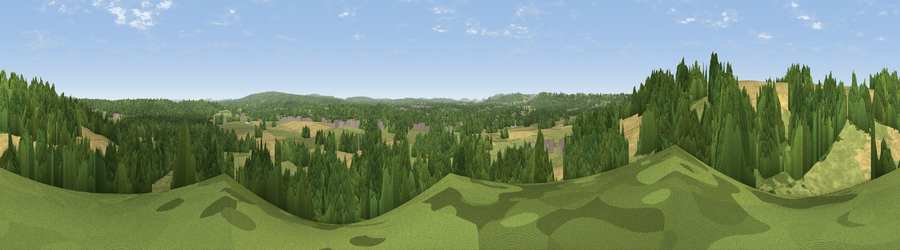

Viewpoint near Kingsley
#29344 in England · top 39% of its area beats it · near KingsleyThe view, rendered

A 360° render of this exact spot computed from the terrain model, tree cover and land cover — summer colours, afternoon light, calibrated against photographs of famous viewpoints. Real trees, hedges and buildings will differ in detail.
The panorama
Grey silhouette: terrain skyline in each direction (720 bearings, Earth curvature and refraction included). Dashed green: skyline with trees (+15 m) and buildings (+8 m) as obstacles. Blue strip: how far the ground is visible on each bearing.
Where the view opens
Wedge length = distance to the farthest visible ground on that bearing (vegetation-aware). Rings at 10, 25 and 50 km.
What fills the view
41% woodland · 39% grassland · 18% cropland ·
Angular shares of the visible panorama (visual magnitude), not map area. Landscape diversity 0.47 (0–1 Shannon).
Key numbers
More beautiful places nearby
The staircase of upgrades: each row has a higher view potential than everything closer. Driving times are estimates from straight-line distance, calibrated against real road routing — check an actual route before setting out.
| Place | Direction | Drive | Score |
|---|---|---|---|
| Viewpoint near Kingsley | W · 1 km | ~2 min | 48.1 |
| Wick Hill | SW · 5 km | ~11 min | 52.4 |
| Viewpoint near Selborne | SW · 8 km | ~16 min | 52.7 |
| Viewpoint near Empshott | SSW · 8 km | ~16 min | 55.0 |
| Noar Hill | SSW · 9 km | ~17 min | 62.3 |
| Gibbet Hill | ESE · 12 km | ~22 min | 64.9 |
| Temple of the Four Winds | ESE · 13 km | ~23 min | 66.6 |
| Viewpoint near Steep | SSW · 13 km | ~24 min | 68.7 |
51.14916, -0.87872 · source: screening · position refined by local search. Computed location — check access rights before visiting.